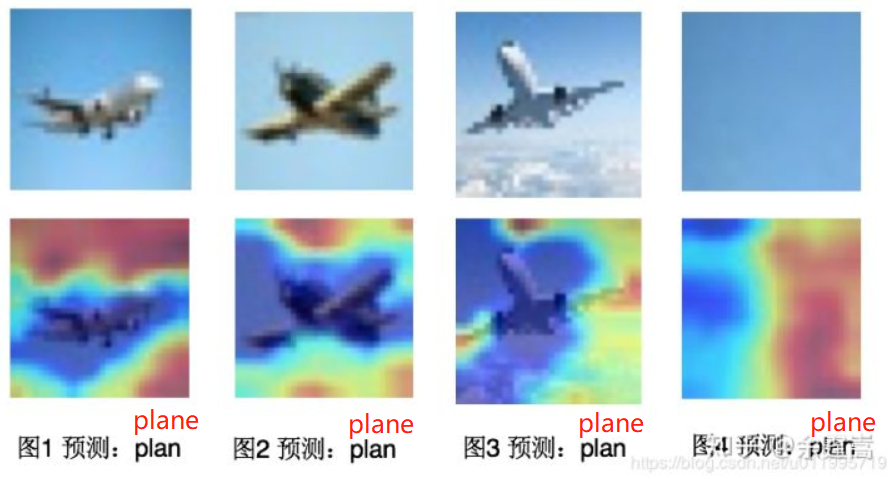
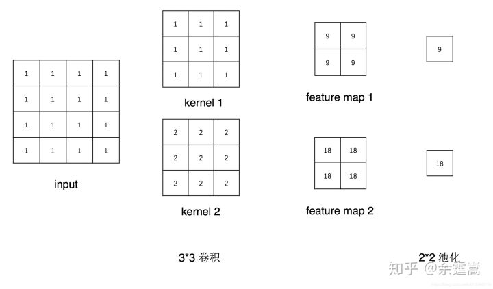
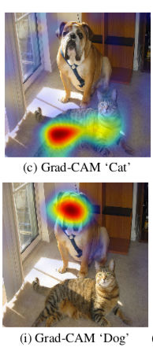
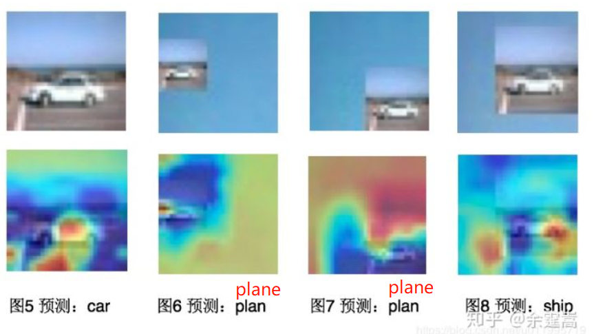

4.5 hook函数
注：本小节主要参考《PyTorch模型训练实用教程》（第一版），主要更新了PyTorch新版本的函数——torch.nn.Module.register_full_backward_hook。
-------------------------------------------------分割线---------------------------------------------------------------
本小节将介绍Module中的三个Hook函数以及Tensor的一个Hook函数
- torch.Tensor.register_hook
- torch.nn.Module.register_forward_hook
- torch.nn.Module.register_forward_pre_hook
- torch.nn.Module.register_full_backward_hook
同时使用hook函数优雅地实现Grad-CAM，效果如下图所示：

Grad-CAM是CAM(class activation map，类激活图)的改进，可对任意结构的CNN进行类激活可视化，不需要修改网络结构或者重新训练，详细理论请参见Grad-CAM: Visual Explanations from Deep Networks via Gradient-based Localization
什么是hook？
Hook函数在多门编程语言中均有出现，是一个经典的编程方式。hook意为钩、挂钩、鱼钩。 引用知乎用户“马索萌”对hook的解释：“(hook)相当于插件。可以实现一些额外的功能，而又不用修改主体代码。把这些额外功能实现了挂在主代码上，所以叫钩子，很形象。”
简单讲，就是不修改主体，而实现额外功能。对应到在pytorch中，主体就是forward和backward，而额外的功能就是对模型的变量进行操作，如“提取”特征图，“提取”非叶子张量的梯度，修改张量梯度等等。
hook的出现与pytorch运算机制有关，pytorch在每一次运算结束后，会将中间变量释放，以节省内存空间，这些会被释放的变量包括非叶子张量的梯度，中间层的特征图等。
但有时候，想可视化中间层的特征图，又不能改动模型主体代码，该怎么办呢？这时候就要用到hook了。 举个例子演示hook提取非叶子张量的梯度：
import torch
def grad_hook(grad):
y_grad.append(grad)
y_grad = list()
x = torch.tensor([[1., 2.], [3., 4.]], requires_grad=True)
y = x+1
y.register_hook(grad_hook)
z = torch.mean(y*y)
z.backward()
print("type(y): ", type(y))
print("y.grad: ", y.grad)
print("y_grad[0]: ", y_grad[0])
>>> ('type(y): ', <class 'torch.Tensor'>)
>>> ('y.grad: ', None)
>>> ('y_grad[0]: ', tensor([[1.0000, 1.5000],
[2.0000, 2.5000]]))
可以看到y.grad的值为None，这是因为y是非叶子结点张量，在z.backward()完成之后，y的梯度被释放掉以节省内存，但可以通过torch.Tensor的类方法register_hook将y的梯度提取出来。
torch.Tensor.register_hook
torch.Tensor.register_hook (Python method, in torch.Tensor.register_hook)
功能：注册一个反向传播hook函数，这个函数是Tensor类里的，当计算tensor的梯度时自动执行。
为什么是backward？因为这个hook是针对tensor的，tensor中的什么东西会在计算结束后释放？ 那就是gradient，所以是backward hook.
形式： hook(grad) -> Tensor or None ，其中grad就是这个tensor的梯度。
返回值：a handle that can be used to remove the added hook by calling handle.remove()
应用场景举例：在hook函数中可对梯度grad进行in-place操作，即可修改tensor的grad值。 这是一个很酷的功能，例如当浅层的梯度消失时，可以对浅层的梯度乘以一定的倍数，用来增大梯度； 还可以对梯度做截断，限制梯度在某一区间，防止过大的梯度对权值参数进行修改。 下面举两个例子，例1是如何获取中间变量y的梯度，例2是利用hook函数将变量x的梯度扩大2倍。
例1：
import torch
y_grad = list()
def grad_hook(grad):
y_grad.append(grad)
x = torch.tensor([2., 2., 2., 2.], requires_grad=True)
y = torch.pow(x, 2)
z = torch.mean(y)
h = y.register_hook(grad_hook)
z.backward()
print("y.grad: ", y.grad)
print("y_grad[0]: ", y_grad[0])
h.remove() # removes the hook
>>> ('y.grad: ', None)
>>> ('y_grad[0]: ', tensor([0.2500, 0.2500, 0.2500, 0.2500]))
可以看到当z.backward()结束后，张量y中的grad为None，因为y是非叶子节点张量，在梯度反传结束之后，被释放。 在对张量y的hook函数（grad_hook）中，将y的梯度保存到了y_grad列表中，因此可以在z.backward()结束后，仍旧可以在y_grad[0]中读到y的梯度为tensor([0.2500, 0.2500, 0.2500, 0.2500])
例2：
import torch
def grad_hook(grad):
grad *= 2
x = torch.tensor([2., 2., 2., 2.], requires_grad=True)
y = torch.pow(x, 2)
z = torch.mean(y)
h = x.register_hook(grad_hook)
z.backward()
print(x.grad)
h.remove() # removes the hook
>>> tensor([2., 2., 2., 2.])
原x的梯度为tensor([1., 1., 1., 1.])，经grad_hook操作后，梯度为tensor([2., 2., 2., 2.])。
torch.nn.Module.register_forward_hook
功能：Module前向传播中的hook,module在前向传播后，自动调用hook函数。 形式：hook(module, input, output) -> None or modified output 。注意不能修改input和output
返回值：a handle that can be used to remove the added hook by calling handle.remove()
举例：假设网络由卷积层conv1和池化层pool1构成，输入一张4*4的图片，现采用forward_hook获取module——conv1之后的feature maps，示意图如下：

import torch
import torch.nn as nn
class Net(nn.Module):
def __init__(self):
super(Net, self).__init__()
self.conv1 = nn.Conv2d(1, 2, 3)
self.pool1 = nn.MaxPool2d(2, 2)
def forward(self, x):
x = self.conv1(x)
x = self.pool1(x)
return x
def farward_hook(module, data_input, data_output):
fmap_block.append(data_output)
input_block.append(data_input)
if __name__ == "__main__":
# 初始化网络
net = Net()
net.conv1.weight[0].fill_(1)
net.conv1.weight[1].fill_(2)
net.conv1.bias.data.zero_()
# 注册hook
fmap_block = list()
input_block = list()
net.conv1.register_forward_hook(farward_hook)
# inference
fake_img = torch.ones((1, 1, 4, 4)) # batch size * channel * H * W
output = net(fake_img)
# 观察
print("output shape: {}\noutput value: {}\n".format(output.shape, output))
print("feature maps shape: {}\noutput value: {}\n".format(fmap_block[0].shape, fmap_block[0]))
print("input shape: {}\ninput value: {}".format(input_block[0][0].shape, input_block[0]))
首先初始化一个网络，卷积层有两个卷积核，权值分别为全1和全2，bias设置为0，池化层采用2*2的最大池化。
在进行forward之前对module——conv1注册了forward_hook函数，然后执行前向传播（output=net(fake_img)），当前向传播完成后， fmap_block列表中的第一个元素就是conv1层输出的特征图了。
这里注意观察farward_hook函数有data_input和data_output两个变量，特征图是data_output这个变量，而data_input是conv1层的输入数据， conv1层的输入是一个tuple的形式。
hook函数调用逻辑
下面剖析一下module是怎么样调用hook函数的呢？
output = net(fakeimg) net是一个module类，对module执行 module(input)是会调用module._call
module.call ：会进入_call_impl，回顾Module那一小节，call_impl是有很多其它代码，这就是对hook函数的处理，可以看到，让注册了hook函数，模型的forward不再是4.1小节里分析的1102行代码进行，而是分别执行对应的hook函数。1109行是执行每个forward_pre_hook的，1120行是执行forward的，1123行是执行forward_hook的， 1144行是执行full_backward_hook的。
def _call_impl(self, *input, **kwargs):
forward_call = (self._slow_forward if torch._C._get_tracing_state() else self.forward)
# If we don't have any hooks, we want to skip the rest of the logic in
# this function, and just call forward.
if not (self._backward_hooks or self._forward_hooks or self._forward_pre_hooks or _global_backward_hooks
or _global_forward_hooks or _global_forward_pre_hooks):
return forward_call(*input, **kwargs)
# Do not call functions when jit is used
full_backward_hooks, non_full_backward_hooks = [], []
if self._backward_hooks or _global_backward_hooks:
full_backward_hooks, non_full_backward_hooks = self._get_backward_hooks()
if _global_forward_pre_hooks or self._forward_pre_hooks:
for hook in (*_global_forward_pre_hooks.values(), *self._forward_pre_hooks.values()):
result = hook(self, input)
if result is not None:
if not isinstance(result, tuple):
result = (result,)
input = result
bw_hook = None
if full_backward_hooks:
bw_hook = hooks.BackwardHook(self, full_backward_hooks)
input = bw_hook.setup_input_hook(input)
result = forward_call(*input, **kwargs)
if _global_forward_hooks or self._forward_hooks:
for hook in (*_global_forward_hooks.values(), *self._forward_hooks.values()):
hook_result = hook(self, input, result)
if hook_result is not None:
result = hook_result
if bw_hook:
result = bw_hook.setup_output_hook(result)
# Handle the non-full backward hooks
if non_full_backward_hooks:
var = result
while not isinstance(var, torch.Tensor):
if isinstance(var, dict):
var = next((v for v in var.values() if isinstance(v, torch.Tensor)))
else:
var = var[0]
grad_fn = var.grad_fn
if grad_fn is not None:
for hook in non_full_backward_hooks:
wrapper = functools.partial(hook, self)
functools.update_wrapper(wrapper, hook)
grad_fn.register_hook(wrapper)
self._maybe_warn_non_full_backward_hook(input, result, grad_fn)
return result
这里需要注意两点：
hook_result = hook(self, input, result)中的input和result不可以修改。这里的input对应forward_hook函数中的data_input，result对应forward_hook函数中的data_output，在conv1中，input就是该层的输入数据，result就是经过conv1层操作之后的输出特征图。虽然可以通过hook来对这些数据操作，但是不能修改这些值，否则会破坏模型的计算。
注册的hook函数是不能带返回值的，否则抛出异常，这个可以从代码中看到 if hook_result is not None: raise RuntimeError
总结一下调用流程： net(fake_img) --> net.call : result = self.forward(input, *kwargs) --> net.forward: x = self.conv1(x) --> conv1.call:hook_result = hook(self, input, result) hook就是注册了的forward_hook函数。
torch.nn.Module.register_forward_pre_hook
功能：执行forward()之前调用hook函数。 形式：hook(module, input) -> None or modified input
应用场景：register_forward_pre_hook与forward_hook一样，是在module.call中注册的，与forward_hook不同的是，其在module执行forward之前就运行了，具体可看module.call中的代码。
torch.nn.Module.register_full_backward_hook
功能：Module反向传播中的hook,每次计算module的梯度后，自动调用hook函数。 形式：hook(module, grad_input, grad_output) -> tuple(Tensor) or None
注意事项：
当module有多个输入或输出时，grad_input和grad_output是一个tuple。
register_full_backward_hook 是修改过的版本，旧版本为register_backward_hook，不过官方已经建议弃用，不需要再了解。
返回值：a handle that can be used to remove the added hook by calling handle.remove()
应用场景举例：提取特征图的梯度
Grad-CAM 实现
采用register_full_backward_hook实现特征图梯度的提取，并结合Grad-CAM（基于类梯度的类激活图可视化）方法对卷积神经网络的学习模式进行可视化。
关
于Grad-CAM请看论文：《Grad-CAM Visual Explanations from Deep Networks via Gradient-based Localization》 简单介绍Grad-CAM的操作，Grad-CAM通过对最后一层特征图进行加权求和得到heatmap，整个CAM系列的主要研究就在于这个加权求和中的权值从那里来。
Grad-CAM是对特征图进行求梯度，将每一张特征图上的梯度求平均得到权值（特征图的梯度是element-wise的）。求梯度时并不采用网络的输出，而是采用类向量，即one-hot向量。
下图是ResNet的Grad-CAM示意图，上图类向量采用的是猫的标签，下图采用的是狗的标签，可以看到在上图模型更关注猫（红色部分），下图判别为狗的主要依据是狗的头部。

下面采用一个LeNet-5演示backward_hook在Grad-CAM中的应用。 简述代码过程：
创建网络net；
注册forward_hook函数用于提取最后一层特征图；
注册backward_hook函数用于提取类向量（one-hot）关于特征图的梯度
对特征图的梯度进行求均值，并对特征图进行加权；
可视化heatmap。
PS：需要注意的是在backward_hook函数中，grad_out是一个tuple类型的，要取得特征图的梯度需要这样grad_block.append(grad_out[0].detach())
思考
这里对3张飞机的图片进行观察heatmap，如下图所示，第一行是原图，第二行是叠加了heatmap的图片。
这里发现一个有意思的现象，模型将图片判为飞机的依据是蓝天，而不是飞机（图1-3）。 那么我们喂给模型一张纯天蓝色的图片，模型会判为什么呢？如图4所示，发现模型判为了飞机
从这里发现，虽然能将飞机正确分类，但是它学到的却不是飞机的特征！ 这导致模型的泛化性能大打折扣，从这里我们可以考虑采用trick让模型强制的学习到飞机而不是常与飞机一同出现的蓝天，或者是调整数据。
对于图4疑问：heatmap蓝色区域是否对图像完全不起作用呢？是否仅仅通过红色区域就可以对图像进行判别呢？ 接下来将一辆正确分类的汽车图片（图5）叠加到图4蓝色响应区域（即模型并不关注的区域），结果如图6所示，汽车部分的响应值很小，模型仍通过天蓝色区域将图片判为了飞机。 接着又将汽车叠加到图4红色响应区域（图的右下角），结果如图7所示，仍将图片判为了飞机。 有意思的是将汽车叠加到图7的红色响应区域，模型把图片判为了船，而且红色响应区域是蓝色区域的下部分，这个与船在大海中的位置很接近。

通过以上代码学习full_backward_hook的使用及其在Grad-CAM中的应用，并通过Grad-CAM能诊断模型是否学习到了关键特征。 关于CAM( class activation maping，类激活响应图)是一个很有趣的研究，有兴趣的朋友可以对CAM、Grad-CAM和Grad-CAM++进行研究。
小结
本小节介绍了编程语言中经典的思想——Hook函数，并讲解了pytorch中如何使用它们，最后还采用full_backward_hook实现有趣的Grad-CAM可视化，本节代码较多，建议对着配套代码单步调试进行学习，掌握hook函数的妙用，在今后使用pytorch进行模型分析、魔改的时候更游刃有余。
下一小结会把本章所学的Module相关容器、网络层的知识点串起来使用，通过剖析torchvision中经典模型的源代码，了解所学习的知识点是如何使用的。